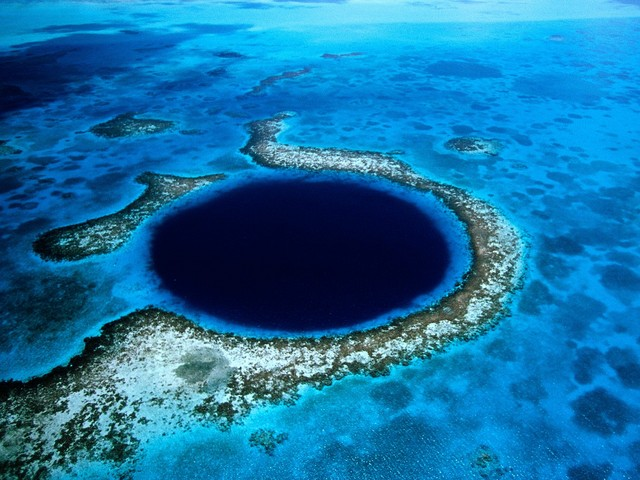
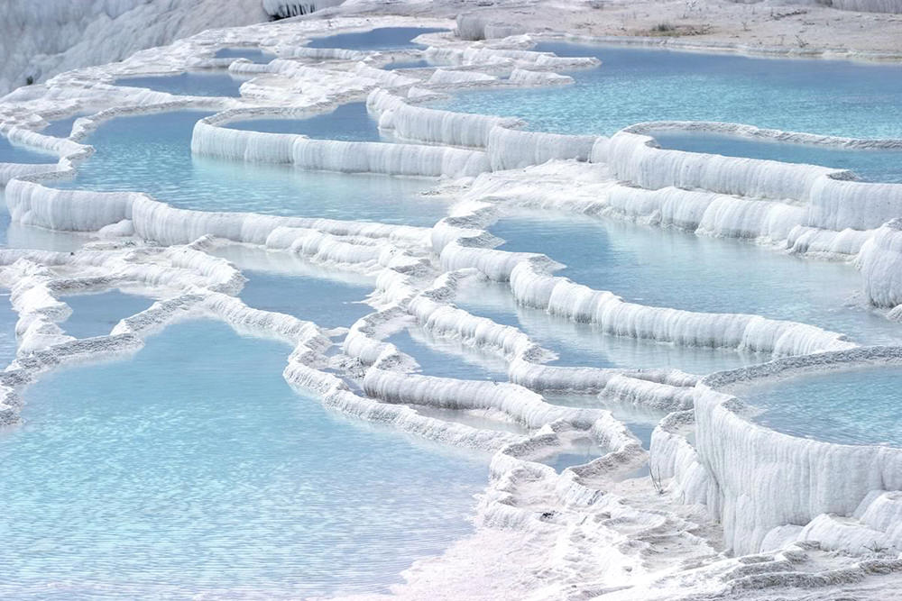
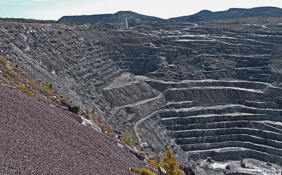

Existen muchas actividades placenteras y, sin duda, ¡viajar es una de ellas! Hoy les enseñare de, al menos con la vista, alguno de los lugares más bonitos del mundo que quisiera visitar.
Seguro que te vendrán genial para imaginarte en un lugar de ensueño, diseñar itinerarios o simplemente recrearte con estas espectaculares imágenes.
-
¿Qué lugar del mundo te gustaría visitar y por qué?
La Calzada del Gigante, Irlanda del Norte, por que quisiera conocer mas a fondo esas enigmaticas columnas hexagonales prácticamente perfectas están apiñadas una al lado de otra como si fueran un rompecabezas

- TAHU El ojo del mar, Belice, esto por que a mi me gusta mucho el mar y me gustaría bucear aunque se considera un lugar peligroso por avitar distintos peces y tiburones pero a mi me gusta los lugares extremos

- La cascada blanca de Pamukkale, Turquía, esto por que me gustaria visitar un lugar con aguas termales y detodas las que existe esta me llamo la atención por su apariencia de un lugar frio pero que en realidad es un lugar calido y también por su paisaje

-
¿Qué lugar del mundo no gustaría visitar y por qué?
- Minas de asbesto, Canada, porque hay asbesto es un mineral muy valioso por sus propiedades de resistencia al calor. Sin embargo, provoca cáncer y otras enfermedades.

- Linfen China, ha sido considerada en varias ocasiones la ciudad más contaminada del mundo. La explotación de minas de carbón, hierro y plomo es el motor industrial de la ciudad, y también la causante de los intolerables niveles de contaminación de la urbe.

|